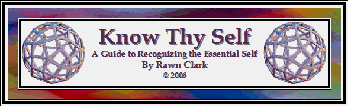

Erkenne dich selbst
In dieser Meditationsübung erforschen wir die Natur der Wahrnehmung durch unsere körperlichen Sinne. Wir werden die unterschiedlichen Aspekte des Bewusstseins ermitteln, die beteiligt sind und untersuchen die Rollen die jeder Aspekt in der körperlichen Wahrnehmung spielt.
Um diese Aufgabe effektiv zu erfüllen, gibt es bestimmte Details im Bezug auf das Umfeld die zu zuerst betrachtet werden müssen. Führen Sie diese Meditationsübung in einem Raum durch in dem sie ungestört sind. Der Raum muss mäßig beleuchtet werden - weder zu hell noch zu schwach - und enthält letztendlich einen Gegenstand den Sie betrachten. Es ist gleichgültig was es für eine Gegenstand ist. Es muss ihnen möglich sein sich bequem zu setzten oder sich zurück zu lehnen ohne das sie Kraft verbrauchen um sich aufrecht zu halten. Ideal ist es für diese Meditationsübung wenn Sie sich zurücklehnen. Ihren Kopf halten Sie leicht erhöht über ihrer Brust und ihre Brust leicht erhöht über Ihrem Unterleib. Das kann erreicht werden indem Sie auf Ihrem Rücken liegen, von einigen Kissen, unter Ihrem Kopf und Ihren Schultern, gestützt.
Da wir mit allen körperlichen Sinnen arbeiten werden brauchen Sie etwas leicht verfügbares zum schmecken, etwas zum riechen und etwas zum hören. Es macht nichts aus welche Art von Dingen Sie auswählen, solange sie durch Geschmack, Geruch und durch das Hören abgefragt werden können. Hinsichtlich des Tones würde es am besten sein wenn sie einen nicht Schallgeschützen Raum auswählen um sich auf Außengeräuschen zu verlassen. Wenn dies aber nicht möglich ist empfehle ich Ihnen eine kleine Glocke, ein Keramikteil oder ein Glas zu nehmen mit dem Sie klingeln können in dem Sie es leicht anstoßen.
Stellen Sie diese Aufnahme auf pause und sammeln sie alles zusammen was Sie benötigen. Sobald alles bereit ist lassen Sie sich nieder und machen Sie es sich körperlich so bequem wie möglich.
(PAUSE)
Es geht los ….
Ihre Augen richten Sich auf den Gegenstand den sie beschlossen haben visuell zu beobachten.
(PAUSE)
In den wenigen Momenten in denen Sie den Gegenstand beobachtet haben sind mehrere Dinge passiert, alle zusammen erzeugten Ihre Wahrnehmung des Objekts. Jedoch sind die einzigen Informationen die Ihr Auge geliefert hat die Details des Objekts. Alles andere an Informationen in Ihrer Wahrnehmung kam von anderen Quellen.
Betrachten Sie Ihren Gegenstand jetzt hochkonzentriert und konzentrieren Sie sich auf jedes Attribut Ihres Gegenstandes. Vermerken Sie seine Größe, seine Form, seine Beschaffenheit und seine Farben. Das sind objektive Information die Ihr Auge Ihrem absichtlichen Bewusstsein verrät.
(PAUSE)
Nehmen Sie jetzt Notiz von den Gefühlen und Reaktionen welche durch die objektiven Details Ihres Objekts in Ihnen hervorgerufen werden. Was für eine Gefühl ruft seine Form in Ihnen hervor ? Oder jede seiner Farben ? Oder seine Größe und Beschaffenheit.
(PAUSE)
Am Anfang involviert Sie diese emotionale Reaktion und Sie erleben Sie wirklich, aber jetzt sollen Sie sie objektiv berücksichtigen, ohne direkt involviert zu werden. Bemerken Sie sie unten akzeptieren Sie sie als objektive Fakten. Fokussieren Sie Ihre Augen auf einen spezifischen Aspekt ihres Gegenstandes und nehmen Sie objektiv Ihre spontane emotionale Reaktion wahr.
(PAUSE)
Und jetzt betrachten Sie das Objekt als ganzes und nehmen Ihre emotionale Reaktion wahr.
(PAUSE)
Diese spontanen emotionalen Reaktion auf Ihre objektiven visuellen Informationen steigen von Ihrem inneren unabsichtlichen Bewusstsein auf und haben ihre Wurzeln in Ihrer vergangenen Erfahrung mit den selben oder ähnlichen objektiven Details die Ihr Objekt besitzt. Dieser Input des unabsichtlichen Bewusstseins gibt jedem objektiven Detail eine persönliche Bedeutung.
Nehmen Sie sich jetzt einige Momente zeit um die objektiven Details ein weiteres mal zu überwachen und nehmen Sie noch einmal ihre emotionalen Reaktion, die aufsteigen, wahr. Versuchen Sie die emotionalen Reaktionen zu den Erinnerungen zurückzuverfolgen welche die emotionalen Reaktionen begründen.
(PAUSE)
Während der letzten Minuten des Betrachtens ihres Gegenstandes und des Wahrnehmens Ihrer emotionalen Reaktionen in Bezug zu seinen Eigenschaften, haben Sie möglicherweise eine innere Stimme gehört, die eine fortlaufende verbale Beschreibung von dem liefert was Sie wahrnehmen. Ihre Gedanken werden zu einer Stimme um gewandelt sobald sie auftauchen und alles was Sie wahrnehmen und fühlen bekommt einen Namen zugeordnet. Diese Stimme entstamm auch dem unabsichtlichen Bewusstsein und es ist das Mittel durch dass, das unabsichtliche Bewusstsein Ihre wahrgenommenen objektiven Details intellektuell mit ihren emotionalen Reaktion verbindet. Es funktioniert wie ein Klebstoff, der die objektiven Details und ihre emotionale Bedeutung in einer Weiße zusammenhält die Sie nachvollziehen können.
Wenn Ihre Aufmerksamkeit fokussiert ist, gehört Ihr innerer Stimme auf irgendeine Weiße dazu. Wenn Ihr Verstand jedoch unfokusiert ist wird die innere Stimme zu einem geistigen Geplapper und kann sich dann über ein breites Spektrum von Themen, Ideen, Gefühlen usw. erstrecken. Dies ist eine ultimative Reflektion des unabsichtlichen Bewusstseins.
Noch einmal betrachten wir die objektiven Details unseres Objekts und dieses mal merken wir uns den Inhalt unseres inneren Dialoges.
(PAUSE)
Verlagern Sie jetzt Ihre Aufmerksamkeit auf Ihre emotionalen Reaktionen und beachten Sie den inneren Dialog der die Reaktionen ausgezeichnet begleitet.
(PAUSE)
Normalerweise stellen der innere Dialog und unsere emotionale Bewertung Informationen bereit die Sie nicht objektiv auswerten oder verifizieren. Tatsache ist das wir oft ihre Existenzen als hauptsächlichen Anteil unserer Auffassung vergessen.
Nehmen Sie sich jetzt einen Moment Zeit um die objektiven Informationen die von Ihren Augen wahrgenommen werden mit den subjektiven Information die von Ihren emotionalen Reaktionen und Ihrer inneren Stimme bereitgestellt werden zu vergleichen. Wie oft, wenn überhaupt, haben Ihre emotionalen Reaktion und Ihr innerer Dialog Ihre Wahrnehmung der objektiven Details verzerrt, unterrichtet oder transformiert.
(PAUSE)
Was Sie gerade vollbracht haben ist eine absichtlich-objektive Wahrnehmung. Sie haben absichtlich die objektiven Details Ihres Objektes wahrgenommen und Sie haben objektiv Ihre subjektifizierende Reaktion Ihres unabsichtlichen Bewusstseins im Bezug auf diese objektiven Details wahrgenommen. Auch wenn Ihre Wahrnehmung eine große Menge an subjektiven Informationen von Ihrem unabsichtlichen Bewusstsein beinhaltet, Sie haben sie dennoch mit ihrem absichtlich-objektiven Bewusstsein wahrgenommen.
Ihr absichtlich-objektives Bewusstsein ist natürlich Ihr essentielles Selbst.
Als nächstes werden wir unsere absichtlich-objektives Bewusstsein benutzten um Töne wahrzunehmen. Schließen Sie Ihre Augen und lenken Sie Ihren Bewusstseinsfokus auf das Hören. Horchen Sie nach externe Geräuschen (oder lassen Sie Ihre Glocke klingeln ) und konzentrieren Sich auf die Wahrnehmung von Geräuschen.
Vermerken Sie die objektiven Details der Tonlage, die Lautstärke, die Dauer des Tones und seinen Rhythmus, usw.
(PAUSE)
Und jetzt konzentrieren Sie sich darauf wie Sie den Ton emotional fühlen. Gefällt, Missfällt er Ihnen oder ist er Ihnen Gleichgültig ?
(PAUSE)
Vermerken Sie den Inhalt Ihres begleiteten inneren Dialoges und nehmen Sie seine objektive Relevants wahr.
(PAUSE)
Vermerken Sie, dass wenn Sie einen Ton wahrnehmen von dem Sie die Entstehung nicht sehen können, generiert Ihr Geist seine eigenen Bilder um die Entstehung des Tones zu beschreiben. Diese sind eng mit Ihrem inneren Dialog und Ihren emotionalen Reaktionen verbunden und teilen sich die gleiche subjektive Quelle innerhalb Ihres unabsichtlichen Bewusstseins. Überwachen Sie mit Ihrem absichtlich-objektiven Bewusstsein die Bilder die Ihr Geist ausgibt um die Entstehung des Tones zu beschreiben.
(PAUSE)
Vergleichen Sie jetzt die Unterschiede zwischen den objektiven Details des Tones und dem subjektiven Inhalt der von Ihrem unabsichtlichen Bewusstsein zur Verfügung gestellt wird.
(PAUSE)
Als nächstes wollen wir unser absichtlich-objektive Bewusstsein benutzten um Aroma wahrzunehmen. Schließen Sie Ihre Augen und konzentrieren Sie sich mit Ihrem Bewusstsein auf den Sinn des Riechens. Inhalieren Sie das Aroma das Sie ausgewählt haben und fokussieren Sie konzentriert die Wahrnehmung des Duftes.
Vermerken Sie seine objektiven Details und achten Sie darauf welche Teile ihres olfaktorischen Organs vom Aroma betroffen sind.
(PAUSE)
Konzentrieren Sie sich darauf welche emotionalen Gefühle Sie bei diesem Duft empfinden. Sagt er Ihnen zu, Missfällt er Ihnen oder ist er Ihnen Gleichgültig.
(PAUSE)
Vermerken Sie den Inhalt Ihres begleitenden inneren Dialoges und nehmen Sie objektiv sein Relevants wahr.
(PAUSE)
Merken Sie auf, dass wenn Sie ein Aroma wahrnehmen Ihr Geist sofort versucht es zu definieren. Er versucht mit Bildern zu definieren was Sie riechen. Diese Bilder sind eng mit Ihrem inneren Dialog und Ihren emotionalen Reaktionen verbunden und teilen sich die selbe subjektive Quelle innerhalb Ihres unabsichtlichen Bewusstseins. Überwachen Sie mit Ihrem absichtlich-objektiven Bewusstsein die Bilder die Ihr Geist ausgibt um das Aroma zu definieren.
(PAUSE)
Vergleichen Sie jetzt die Unterschieden zwischen den objektiven Details des Geruches und den subjektiven Inhalt der durch Ihr unabsichtliches Bewusstsein bereitgestellt wird.
(PAUSE)
Als nächstes wollen wir mit unserem absichtlich-objektiven Bewusstsein Geschmack wahrnehmen. Schließen Sie Ihre Augen und konzentrieren Sie Ihr Bewusstsein auf den Sinn des Geschmackes. Lecken Sie oder schlucken Sie einen kleinen Bissen von Ihrem ausgewählten Objekt und konzentrieren Sie sich stark auf Ihre Wahrnehmung des Geschmackes.
Vermerken Sie die objektiven Details des Geschmackes die Sie mit Ihrer Zunge wahrnehmen.
(PAUSE)
Konzentrieren Sie sich jetzt darauf wie Sie sich emotional bei diesem Geschmack fühlen. Sagt er Ihnen zu, Missfällt er Ihnen oder ist er Ihnen Gleichgültig.
(PAUSE)
Vermerken Sie den Inhalt Ihres begleitenden innern Dialoges und nehmen Sie sein objektiv Relevanz wahr.
(PAUSE)
Vergleichen Sie jetzt die Unterschieden zwischen den objektiven Details des Geschmacks und dem subjektiven Inhalt der von Ihrem unabsichtlichen Bewusstsein bereit gestellt wird.
(PAUSE)
Als nächstes erforschen wir die Wahrnehmung durch unseren Sinn für Berührung oder dem körperliche Fühlen. Es gibt für diesen Sinn keinen adäquaten Namen - die Ausdrücke Berührung and Taktil decken lediglich einen Aspekt von all dem ab was dieser Sinn dem Bewusstsein offenbart. Der Taktile Aspekt ist darauf ausgerichtet die externe Umwelt und Ihre Relevants für die Nervenenden im inneren der Schichten der Haut wahrzunehmen und ist im Stande objektive Umweltfaktoren wie Beschaffenheit, Temperatur und Druck wahrzunehmen. Der nicht Taktile Aspekt ist darauf ausgerichtet unsere innere Umwelt , wie zum Beispiel Muskelkater, das jucken einer Wunde auf der Haut oder die Darmtätigkeiten wahrzunehmen. Er verlässt sich ebenfalls auf spezialisierte Nervenenden, außer dass diese sensorische Nerven durch tieferes Gewebe und die Knochen unseres Körpers gehen.
Dies ist der Sinn der unser Bewusstsein am meisten mit unserem physikalischen Körper und mit der physikalischen Existenz verknüpft. Er durchdring und verändert die Wahrnehmung durch unsere vier anderen physikalischen Sinne. Wenn das was wir anschauen zum Beispiel zu hell ist fühlen wir uns in unseren Augen unbehaglich; wenn ein Ton zu laut oder zu schrill ist fühlen wir uns gleichermaßen in unseren Ohren unbehaglich; und bei beiden dem Geruch- und dem Geschmackssinn sind taktile Empfindung involviert während wir Luft durch die Stirnhöhle Atmen und Essen und Trinken in unseren Mund nehmen.
Jede dieser taktilen Empfindungen taucht während des Prozesses der subtilen Wahrnehmung auf , oder nicht so subtile Einflüsse sind das Resultat der Wahrnehmung , besonders im emotialen Level. Wenn es uns zum Beispiel körperlich schmerzt etwas anzuschauen, schauen wir weg und formen eine negative emotionale Erinnerung der wir ähnlich wieder begegnen sollten und die uns davon abhält hinzuschauen. Umgekehrt wenn es uns körperliche erfreut etwas anzuschauen schauen wir es weiter an und formen eine positive emotionale Erinnerung, die uns dazu bringt ähnliche Dinge außerhalb der Überwachung zu suchen.
Die Wahrnehmung von körperlichen Gefühlen wird normalerweise vom unabsichtlich-subjektiven Bewusstsein verarbeitet bevor sie vom absichtlichen Bewusstseins registriert wird. Mit anderen Worten, wir können eine unmittelbare emotionale Bewertung des Ereignisses erschaffen. Dies ist eine biologische fest verdrahtete Fähigkeit unserer instinktiven Selbstwahrnehmung die eine unmittelbare Rückmeldung von körperlicher Gefahr generiert. Wenn Sie zum Beispiel etwas berühren das so heiß ist das es Ihre Finger verbrennt, ziehen Sie Ihre Hand umgehend zurück ohne das Sie zuerst denken müssen - „Oh, das ist zu heiß. Ich lasse meine Finger besser nicht da während meine Haut sich verbrennt."
Ungeachtet dieses strikten biologischen Selbstschutzes, sind wir im Stande absichtlich-objektiv durch und mit diesem Sinn wahrzunehmen. Wir können die unabsichtlich-subjektive Komponente natürlich nicht abschalten, aber wir können sie objektiv wahrnehmen ohne involviert zu werden und können sie als Teil der objektiven Information betrachten, im Bezug auf den Sinneseindruck, der uns beeinflusst.
Lassen Sie uns also wieder zurück zur Erkundung gehen und diese Worte und Ideen in die Praxis umsetzen. Schließen Sie Ihre Augen und messen Sie die Temperatur der Luft innerhalb des Raumes in dem Sie sich befinden. Ist es warm ? Kalt ? Oder gerade richtig ?
(PAUSE)
Vermerken Sie den Wert des Urteiles das der Beurteilung der Temperatur innewohnt. Er basiert Komplett auf der Veränderung der Temperatur Ihrer „Komfortzone". Wenn die Temperatur niedriger wie diese Zone ist dann beurteilen Sie es als kalt, wenn sie höher ist dann beurteilen Sie es als warm. Die einzige objektive Information die aufgedeckt wird ist die Beziehung der aktuellen Lufttemperatur zu Ihrer persönlichen Komfortzone.
Lassen Sie uns diesen Sinn nach innen richten und das innere unseres eigenen Körpers wahrnehmen. Nehmen Sie die Empfindung der Luft war die in Ihre Stirnhöhle eintritt während Sie Atmen, oder die Ihre Zunge passiert wenn Sie durch den Mund atmen. Fokussieren Sie Ihr Bewusstsein auf den exakten körperlichen Ort der Empfindung und erleben Sie sie unmittelbar.
(PAUSE)
Wieder ist hier ein direkter Wert der beurteilt ob die Luft relativ warm oder kalt ist und seine relativ gutes oder schlechtes beurteilt. Hinter dieser emotionalen Reaktion auf das körperliche Erlebnis gibt es aber eine objektive Erfahrung des Erlebnisses. Die objektive Erfahrung beinhaltet die unabsichtlich-subjektiven Wertungen, aber sie ist mehr als nur das Gefühl das wir von dem Erlebnis haben - sie ist auch unsere aktuelle Echtzeit Erfahrung die wir von dem Erlebnis haben als es stattfand.
Fokussieren Sie Ihr absichtliche Bewusstsein jetzt auf das Erleben der Erfahrung wie die inhalierte Luft Ihre Nervenenden passiert und ignorieren Sie jedes emotionalen Werteurteil das auftaucht.
(PAUSE)
Verfolgen Sie jetzt das Erlebnis innerlich. Nehmen sie die Luft wahr, wie sie tiefere Bereiche in Ihrer Stirnhöhle und dann Ihren Hals berührt. Mit jeder Inhalation verfolgen das Erlebnis tiefer und tiefer bis Sie fühlen wie sich Ihre Lungen mit Luft füllen.
(PAUSE)
Erweitern Sie Ihren Fokus so das sie Ihren kompletten Brustbereich als ganzes wahrnehmen. Erleben Sie das Gefühl wie sich Ihre Brust mit jeder Inhalation ausdehnt und sich mit jedem Ausatmen zusammenzieht.
(PAUSE)
Versetzen Sie Ihr Bewusstsein jetzt in Ihre rechte Hand und erleben sie alle momentanen Empfindungen in Ihr.
(PAUSE)
Vergrößern Sie jetzt Ihr Bewusstsein so das Sie die Empfindung Ihres kompletten physikalischen Körpers als ganzes Erfahren. Verweilen Sie jetzt einige Momente bei dieser Empfindung und stellen Sie fest wie es sich anfühlt in Ihrem physikalischen Körper zu sein. Erlauben sie das subjektive emotionale Urteile aufsteigen und Sie über Ihre emotionalen Haltung im Bezug auf Ihren physikalischen Körper informieren.
(LANGE PAUSE)
Konzentrieren Sie sich wieder auf meine Stimme und kehren Sie sachte zu einem Bewusstsein Ihrer Umgebung zurück.
(PAUSE)
Öffnen Sie Ihre Augen und erheben Sie sich von Ihrer anlehnenden während ich ein paar Worte sage.
Ich hoffe das Sie durch diese kurze Erkundung einige wichtige Dinge über Ihre körperliche Wahrnehmung gelernt haben. Anfänglich in ihnen herumzustöbern ist die Stufe in dem Ihr unabsichtlich-subjektives Bewusstsein den Prozess der Wahrnehmung beeinflusst. Die Zweite Stufe in der Ihr absichtlich-objektives Bewusstsein im Prozess der Wahrnehmung eingreift macht die Wahrnehmung zu etwas viel informativeres.
Wenn Sie das unabsichtlich-subjektive Bewusstsein zu lassen, informiert sie die Wahrnehmung hauptsächlich über Ihr Selbst und darüber wie Sie mit der Welt in Beziehung stehen. Wenn Sie aber mit Ihrem absichtlich-objektiven Bewusstsein eingreifen beginnt die Wahrnehmung uns über die objektive Wahrnehmung unseres subjektifizierenden Inhaltes und seine Verbindung zur objektiven Realität zu informieren
Der gebraucht von unserem absichtlich-objektiven Bewusstsein offenbart den subjektiven Filter durch den wir normalerweise unsere Welt und uns selbst wahrnehmen.
Ich empfehle, dass Sie während der nächsten Tage und Wochen ihre Fähigkeiten des absichtlich-objektiven Bewusstsein im Akt Ihrer Wahrnehmung gebrauchen. Nehmen Sie die Dinge die Sie betrachten wirklich wahr und erfahren Sie die Empfindungen denen Sie begegnen. Genießen Sie sie voll und ganz und merken Sie sich die objektiven Bedeutungen die hinter den subjektiven Reaktionen versteckt sind. Benutzen Sie Ihre Sinne und Ihr Bewusstsein und wenden Sie die Zeit auf um das leben in Ihrem eigenen Wunder, Ihrem Körper, wirklich zu erfahren.